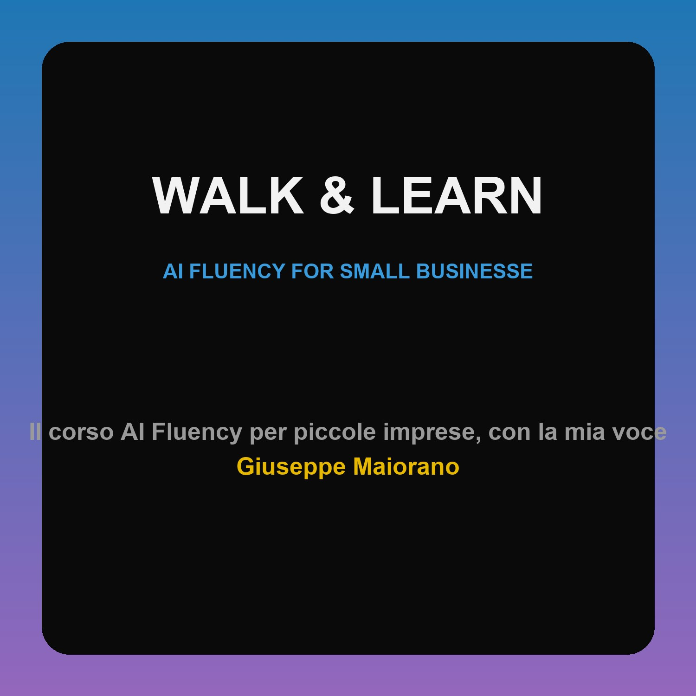

Walk and Learn — AI Fluency for Small Businesses
Il corso AI Fluency per piccole imprese, con la mia voce
Aggiungi all'app podcastCopia e usa "Aggiungi programma via URL".
https://maiorang.github.io/walk-and-learn/small-business/podcast.xml
Ascolta qui
L04 — Next token simulator
L05 — Description discernment research
L06 — Delegation diligence customer data
L07 — Choosing tasks to delegate
L08 — Responsible use and transparency
L09 — Putting it into practice
Velocità regolabile nell'app. Pause già nell'audio.